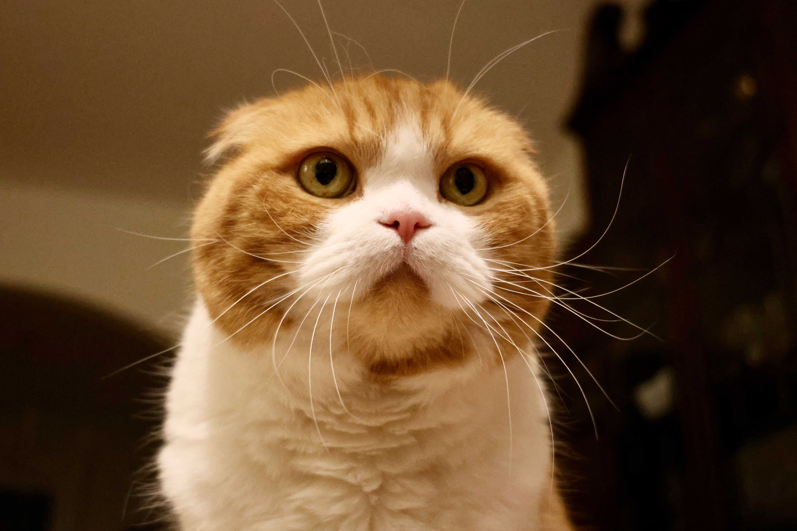

British shorthairs are beloved for their thick, dense coats that come in almost any color or pattern. Blue-gray cats, often called British blues, are probably the most popular color choice of British shorthair fanciers.
This breed is also easy to recognize because of their thick legs, broad chests, rounded heads, and chubby cheeks that are totally pinchable. British shorthairs with blue coats have bold orange-amber eyes, but individuals with other coat colors can have green, copper, amber, or blue eyes.
Click Info about British Shorthair cats to know more info
Scottish Fold

The most noticeable feature of a Scottish Fold cat is its ears, which are small and tightly folded forward to cover the ear opening. The tips of the ears are rounded. The Scottish Fold is of medium size with a solid compact body. The head is rounded, with well-defined whisker pads, and is set on a short neck. The eyes are large and wide open with a sweet expression. The coat of the Scottish Fold is short and dense. It comes in a variety of colours and patterns.
Named after its forward folding ears, the Scottish Fold cat breed was first seen as a natural mutation in Scotland in the 1960s. British cat show judges and numerous veterinary surgeons decided that the cat's folded ears were an undesirable deformity and would make it impossible for the cat to clean its ears. Deformities of the spine, hind legs and tail also appeared when folded-ear cats were bred to one another.